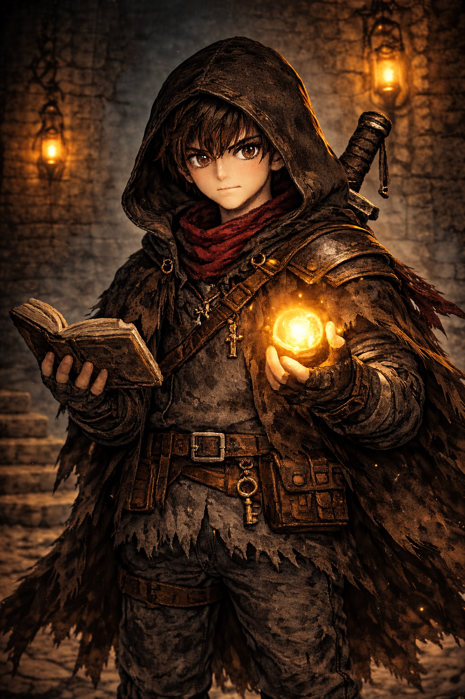

Um garoto segue uma luz misteriosa na floresta e desperta em um castelo antigo, tomado por monstros, memórias e segredos que parecem conhecer sua dor.
Narrativa misteriosa
Exploração de castelo
Pixel art sombria

Você entrou no castelo. Agora ele não vai te soltar sem antes mostrar tudo o que você tentou esquecer.
Noah, um menino de 13 anos, desaparece após seguir uma luz estranha em uma noite de tempestade. Ao despertar em um castelo antigo cheio de criaturas monstruosas, ele percebe que cada corredor parece reagir às suas memórias, culpas e perdas. Para sair, será preciso explorar, sobreviver e encarar a verdade.
Ideal para quem gosta de explorar cenários, juntar pistas, criar teorias e mergulhar em histórias com clima sombrio e emocional.
Cada sala do castelo pode esconder pistas, objetos e fragmentos da narrativa.
Clima sombrio e ameaçador sem depender de dificuldade injusta ou punição exagerada.
Bilhetes, ruínas, símbolos e monstros ajudam a contar a história sem revelar tudo de uma vez.
Uma proposta inspirada em jogos indie retrô, com foco em atmosfera, exploração e descoberta.
Explore, enfrente criaturas e monte sua própria interpretação dessa história.
Acompanhar o projeto